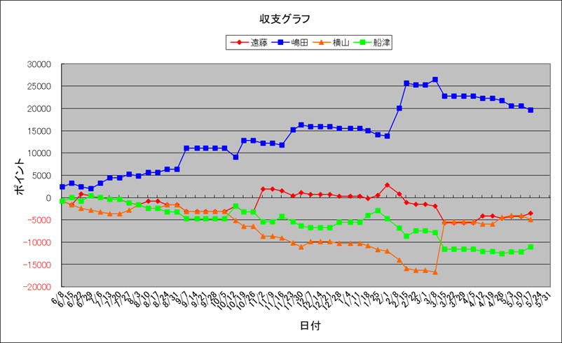

| 順位 | 馬主 | 今年度収支 | 今年度ﾎﾟｲﾝﾄ | 1頭当ﾎﾟｲﾝﾄ | 1走当ﾎﾟｲﾝﾄ | 勝率 | 連対率 | 複勝率 | ﾃﾞﾋﾞｭｰ頭数 | 勝馬頭数 | 出走回数 | 1着 | 2着 | 3着 | 4着 | 5着 | 着外 |
|---|---|---|---|---|---|---|---|---|---|---|---|---|---|---|---|---|---|
| 1 | 嶋田 | 19630 | 12800 | 853.3 | 220.7 | 27.59% | 43.10% | 56.90% | 15 | 11 | 58 | 16 | 9 | 8 | 0 | 6 | 19 |
| 2 | 遠藤 | -3570 | 7000 | 500.0 | 142.9 | 26.53% | 32.65% | 55.10% | 14 | 10 | 49 | 13 | 3 | 11 | 4 | 5 | 13 |
| 3 | 横山 | -4970 | 6650 | 511.5 | 184.7 | 25.00% | 41.67% | 52.78% | 13 | 6 | 36 | 9 | 6 | 4 | 3 | 3 | 11 |
| 4 | 船津 | -11090 | 5120 | 341.3 | 89.8 | 19.30% | 40.35% | 54.39% | 15 | 8 | 57 | 11 | 12 | 8 | 6 | 6 | 14 |
